候选 01
下载原图原图颜色近似统计
| 颜色 | 面积 | 目标 | 下部高度¹ |
|---|---|---|---|
| #46D9FF | 71.0% | 70.2% | 0.6% |
| #2D2D2D | 6.3% | 11.3% | 28.7% |
| #92EF4D | 7.8% | 8.8% | 32.8% |
| #65392D | 10.8% | 5.9% | 13.6% |
| #FF525B | 4.0% | 3.4% | 63.4% |
| #FFCAA9 | 0.2% | 0.4% | 52.2% |
内置生图工具生成 · 每关 4 张独立候选 · 原始 PNG / 1254 × 1254 · 按字节保存
这是原图预览，尚未进行 60 × 60 转换、结构检查或难度评估。色比和位置仍有偏差，请结合下方观察筛选。
绿色身体和脚仍容易偏低。第 02 张绿色下部 1% 分位约 39.1%，红色约 67.3%，位置较接近要求，但黑色面积仍不足；其他候选还需重点检查沙丘大小和红绿高度。
| 颜色 | 面积 | 目标 | 下部高度¹ |
|---|---|---|---|
| #46D9FF | 71.0% | 70.2% | 0.6% |
| #2D2D2D | 6.3% | 11.3% | 28.7% |
| #92EF4D | 7.8% | 8.8% | 32.8% |
| #65392D | 10.8% | 5.9% | 13.6% |
| #FF525B | 4.0% | 3.4% | 63.4% |
| #FFCAA9 | 0.2% | 0.4% | 52.2% |
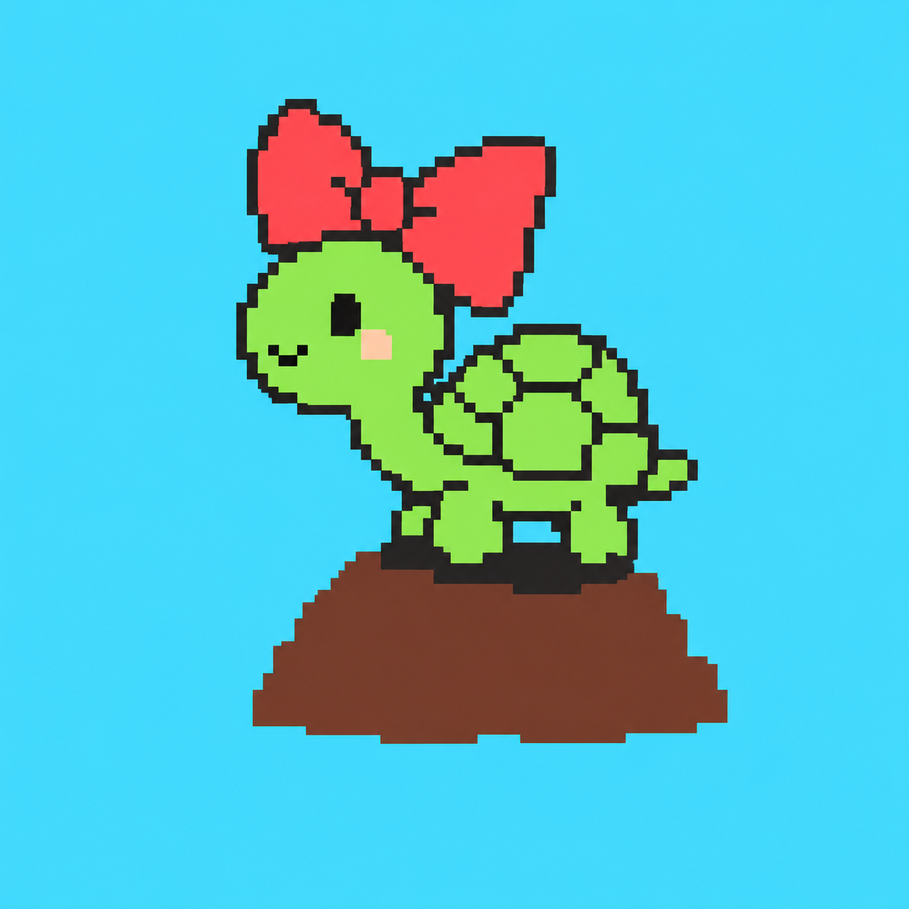
| 颜色 | 面积 | 目标 | 下部高度¹ |
|---|---|---|---|
| #46D9FF | 76.2% | 70.2% | 0.7% |
| #2D2D2D | 4.9% | 11.3% | 35.3% |
| #92EF4D | 7.2% | 8.8% | 39.1% |
| #65392D | 8.2% | 5.9% | 18.6% |
| #FF525B | 3.4% | 3.4% | 67.3% |
| #FFCAA9 | 0.1% | 0.4% | 60.5% |
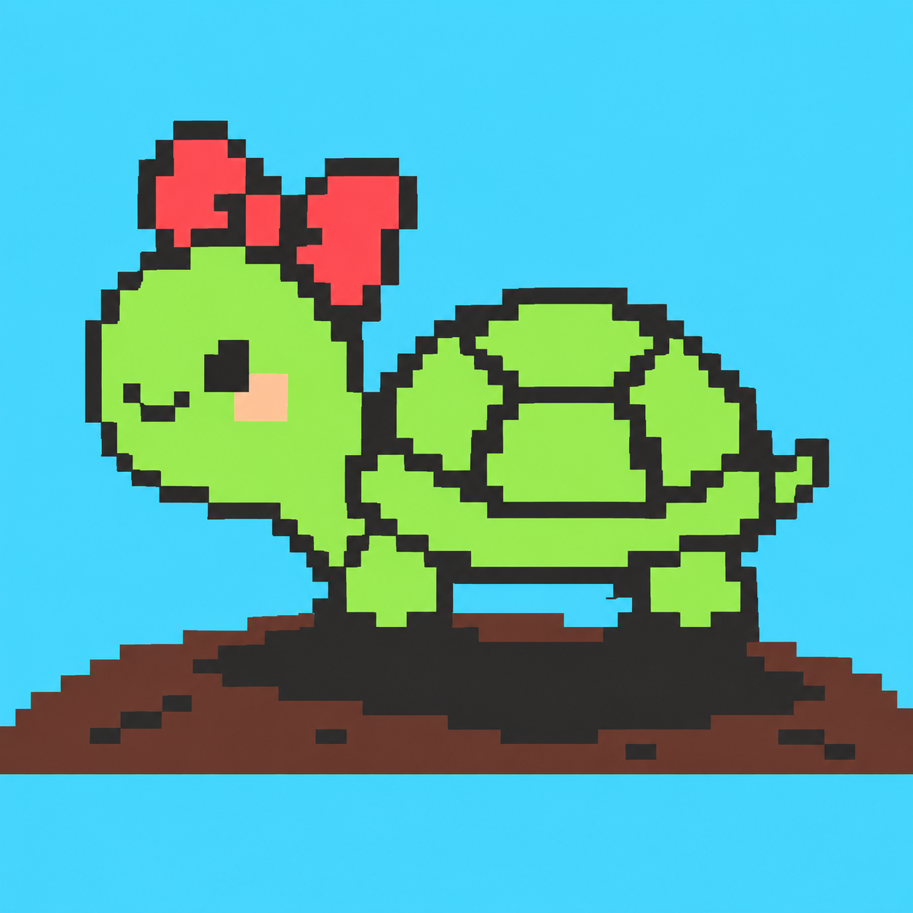
| 颜色 | 面积 | 目标 | 下部高度¹ |
|---|---|---|---|
| #46D9FF | 58.9% | 70.2% | 0.6% |
| #2D2D2D | 15.5% | 11.3% | 18.7% |
| #92EF4D | 14.6% | 8.8% | 33.1% |
| #65392D | 8.6% | 5.9% | 15.2% |
| #FF525B | 2.0% | 3.4% | 67.2% |
| #FFCAA9 | 0.3% | 0.4% | 53.9% |
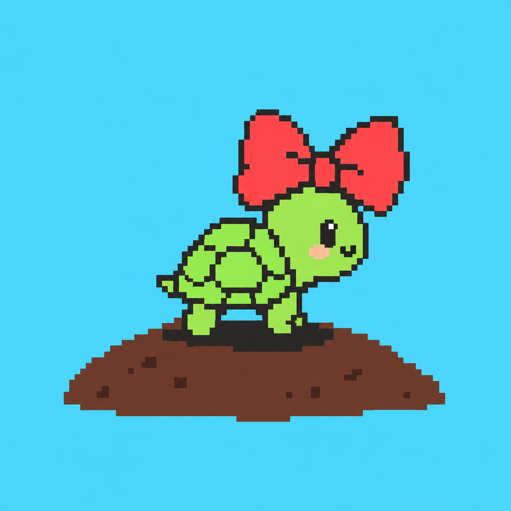
| 颜色 | 面积 | 目标 | 下部高度¹ |
|---|---|---|---|
| #46D9FF | 77.0% | 70.2% | 0.7% |
| #2D2D2D | 5.1% | 11.3% | 22.9% |
| #92EF4D | 4.8% | 8.8% | 35.3% |
| #65392D | 9.5% | 5.9% | 18.4% |
| #FF525B | 3.5% | 3.4% | 59.9% |
| #FFCAA9 | 0.1% | 0.4% | 49.3% |
黄色身体在部分候选中仍延伸到较低位置；白色眼睛高光偏少。第 04 张黄色下部 1% 分位高度约 26.1%（提示词要求 30% 以上），红脸颊约 48.1%（要求 50% 以上）。
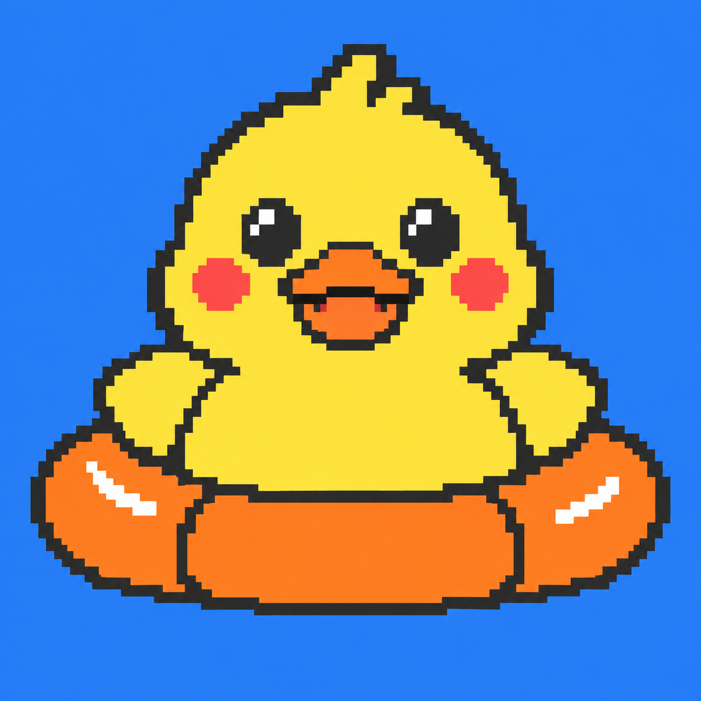
| 颜色 | 面积 | 目标 | 下部高度¹ |
|---|---|---|---|
| #2982F4 | 52.2% | 51.2% | 0.5% |
| #FFDF48 | 21.8% | 27.6% | 30.8% |
| #2D2D2D | 10.8% | 10.9% | 12.6% |
| #FF7E27 | 13.6% | 8.4% | 14.4% |
| #FF525B | 1.0% | 1.3% | 55.7% |
| #FFFFFF | 0.6% | 0.7% | 25.5% |
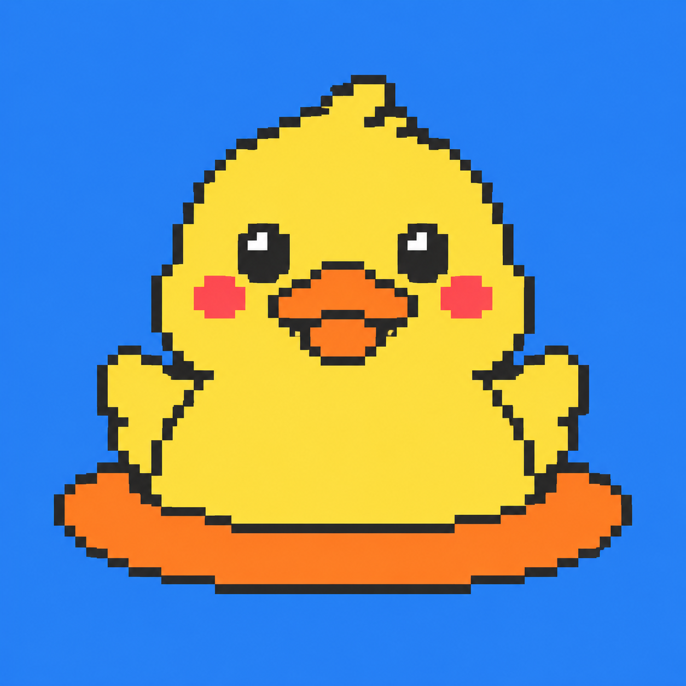
| 颜色 | 面积 | 目标 | 下部高度¹ |
|---|---|---|---|
| #2982F4 | 58.5% | 51.2% | 0.6% |
| #FFDF48 | 24.7% | 27.6% | 24.4% |
| #2D2D2D | 7.6% | 10.9% | 13.6% |
| #FF7E27 | 8.3% | 8.4% | 15.0% |
| #FF525B | 0.8% | 1.3% | 53.7% |
| #FFFFFF | 0.1% | 0.7% | 63.6% |
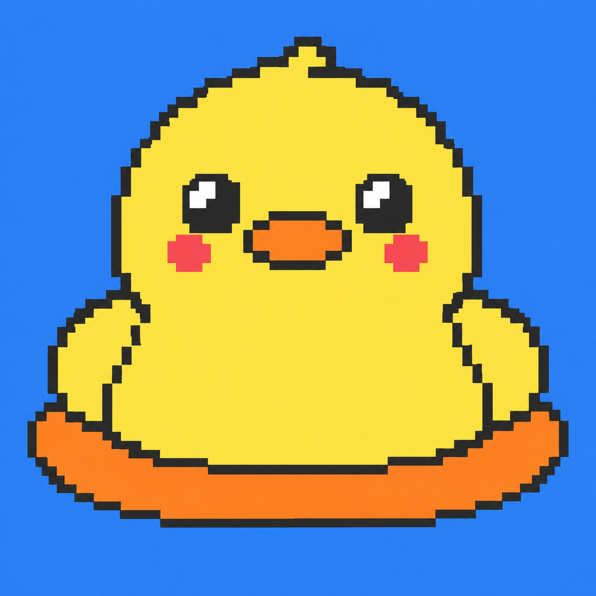
| 颜色 | 面积 | 目标 | 下部高度¹ |
|---|---|---|---|
| #2982F4 | 47.7% | 51.2% | 0.4% |
| #FFDF48 | 33.6% | 27.6% | 23.1% |
| #2D2D2D | 9.1% | 10.9% | 11.7% |
| #FF7E27 | 8.5% | 8.4% | 13.2% |
| #FF525B | 0.7% | 1.3% | 54.5% |
| #FFFFFF | 0.3% | 0.7% | 65.1% |

| 颜色 | 面积 | 目标 | 下部高度¹ |
|---|---|---|---|
| #2982F4 | 52.5% | 51.2% | 0.5% |
| #FFDF48 | 26.1% | 27.6% | 26.1% |
| #2D2D2D | 9.5% | 10.9% | 13.4% |
| #FF7E27 | 10.4% | 8.4% | 15.1% |
| #FF525B | 1.3% | 1.3% | 48.1% |
| #FFFFFF | 0.2% | 0.7% | 61.5% |
橙色脑袋仍容易伸入下半部。第 03 张橙色下部 1% 分位约 43.1%（要求 47% 以上）；嘴部及木头存在非标准色调，不能把这份原图统计当成转换结果。
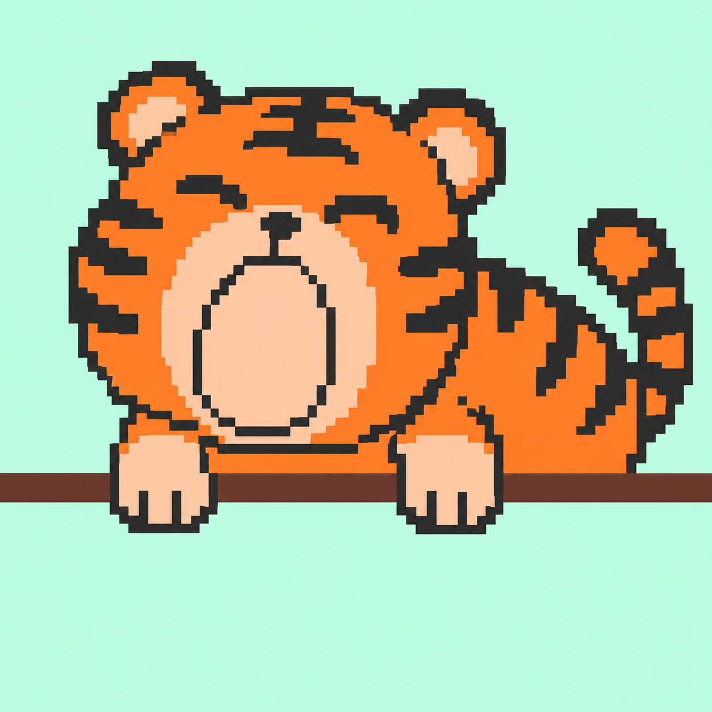
| 颜色 | 面积 | 目标 | 下部高度¹ |
|---|---|---|---|
| #C5FFE4 | 56.5% | 40.0% | 0.6% |
| #FF7E27 | 17.5% | 23.2% | 33.9% |
| #2D2D2D | 12.2% | 21.1% | 25.7% |
| #FFCAA9 | 10.2% | 12.8% | 27.5% |
| #65392D | 3.5% | 2.8% | 27.6% |
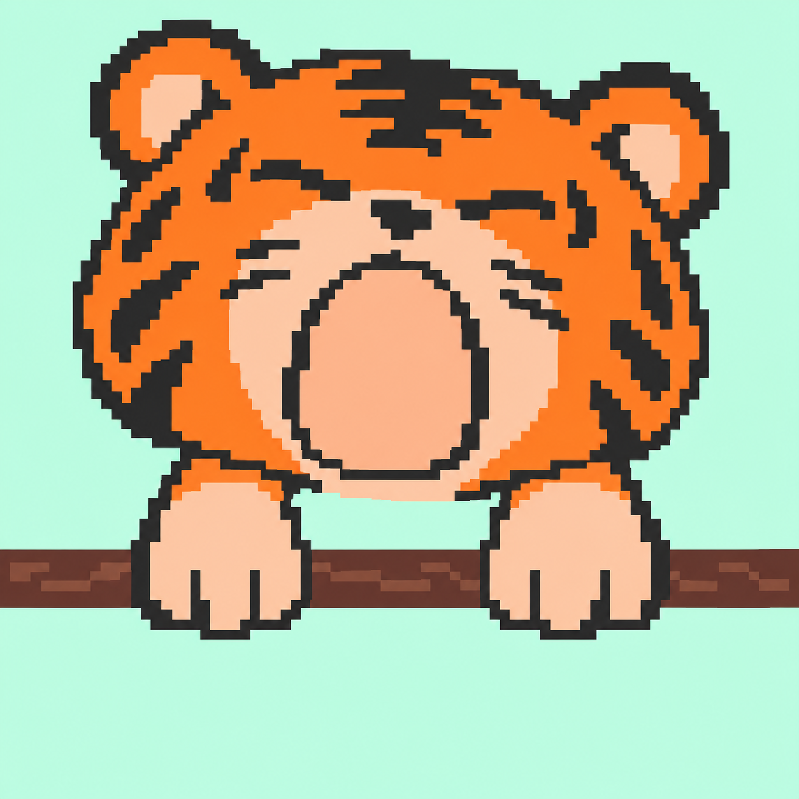
| 颜色 | 面积 | 目标 | 下部高度¹ |
|---|---|---|---|
| #C5FFE4 | 47.9% | 40.0% | 0.5% |
| #FF7E27 | 16.9% | 23.2% | 39.0% |
| #2D2D2D | 14.0% | 21.1% | 21.1% |
| #FFCAA9 | 16.7% | 12.8% | 22.7% |
| #65392D | 4.6% | 2.8% | 23.9% |

| 颜色 | 面积 | 目标 | 下部高度¹ |
|---|---|---|---|
| #C5FFE4 | 48.4% | 40.0% | 0.5% |
| #FF7E27 | 18.7% | 23.2% | 43.1% |
| #2D2D2D | 16.8% | 21.1% | 19.6% |
| #FFCAA9 | 13.7% | 12.8% | 22.0% |
| #65392D | 2.5% | 2.8% | 22.4% |
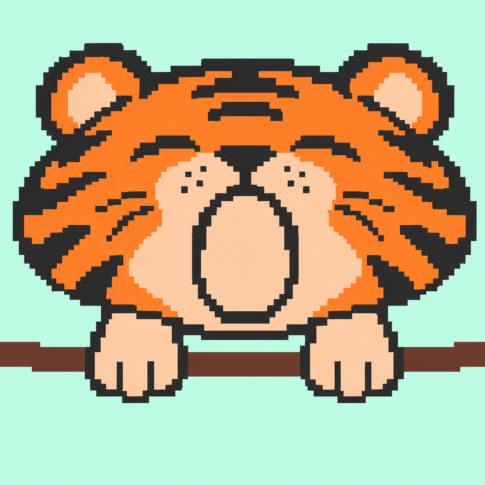
| 颜色 | 面积 | 目标 | 下部高度¹ |
|---|---|---|---|
| #C5FFE4 | 43.5% | 40.0% | 0.4% |
| #FF7E27 | 18.3% | 23.2% | 36.5% |
| #2D2D2D | 17.7% | 21.1% | 18.4% |
| #FFCAA9 | 16.8% | 12.8% | 19.9% |
| #65392D | 3.7% | 2.8% | 22.0% |
黄色稻草窝已贴底，但各候选的白色仍偏多。第 03 张黄色约 32.2%（目标 37.2%）；第 04 张出现额外红脸颊、红舌头和橙色嘴，需特别排查颜色高度。
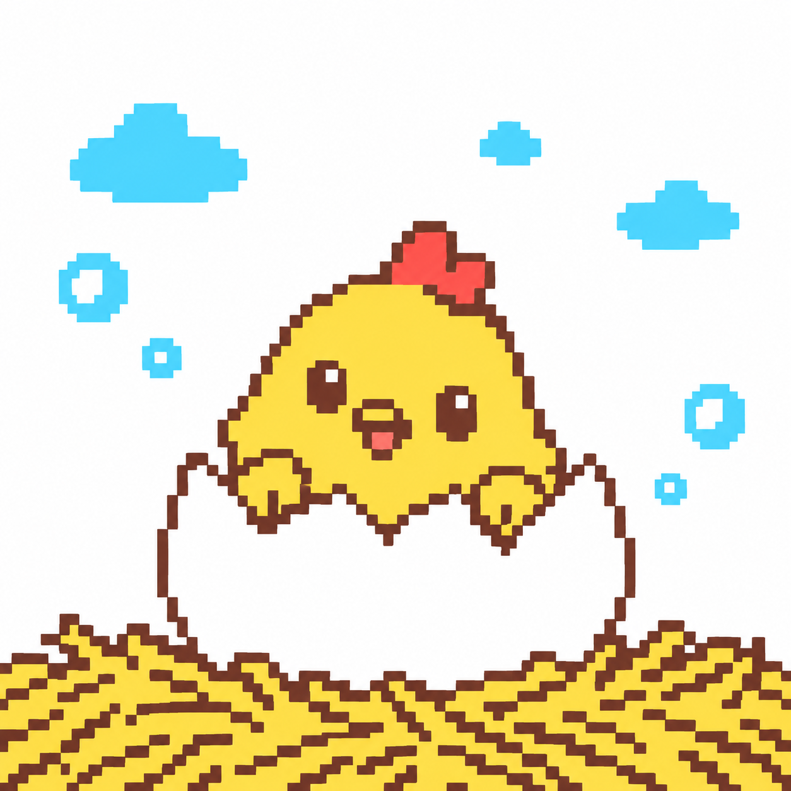
| 颜色 | 面积 | 目标 | 下部高度¹ |
|---|---|---|---|
| #FFFFFF | 66.2% | 40.6% | 16.3% |
| #FFDF48 | 17.8% | 37.2% | 0.2% |
| #65392D | 10.8% | 15.2% | 0.3% |
| #46D9FF | 4.3% | 5.5% | 37.5% |
| #FF525B | 0.9% | 1.4% | 1.8% |
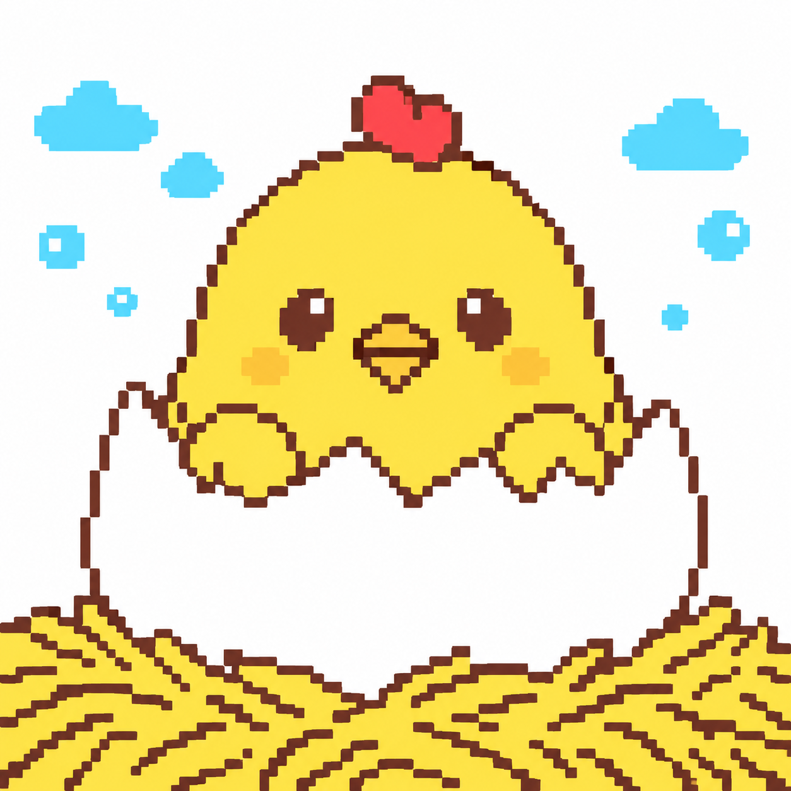
| 颜色 | 面积 | 目标 | 下部高度¹ |
|---|---|---|---|
| #FFFFFF | 56.1% | 40.6% | 16.6% |
| #FFDF48 | 28.8% | 37.2% | 0.3% |
| #65392D | 10.9% | 15.2% | 0.5% |
| #46D9FF | 3.1% | 5.5% | 59.5% |
| #FF525B | 1.0% | 1.4% | 1.6% |
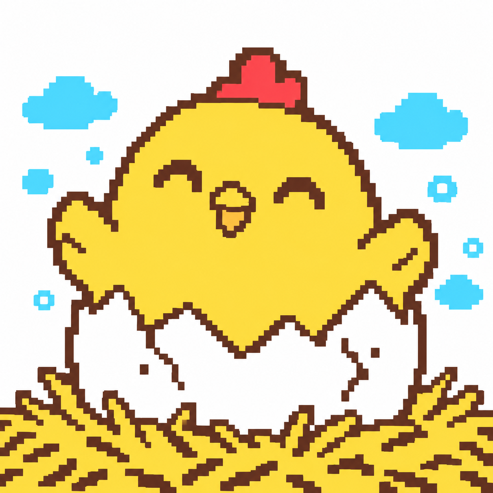
| 颜色 | 面积 | 目标 | 下部高度¹ |
|---|---|---|---|
| #FFFFFF | 47.8% | 40.6% | 15.3% |
| #FFDF48 | 32.2% | 37.2% | 0.3% |
| #65392D | 14.5% | 15.2% | 0.7% |
| #46D9FF | 4.3% | 5.5% | 37.8% |
| #FF525B | 1.2% | 1.4% | 3.8% |
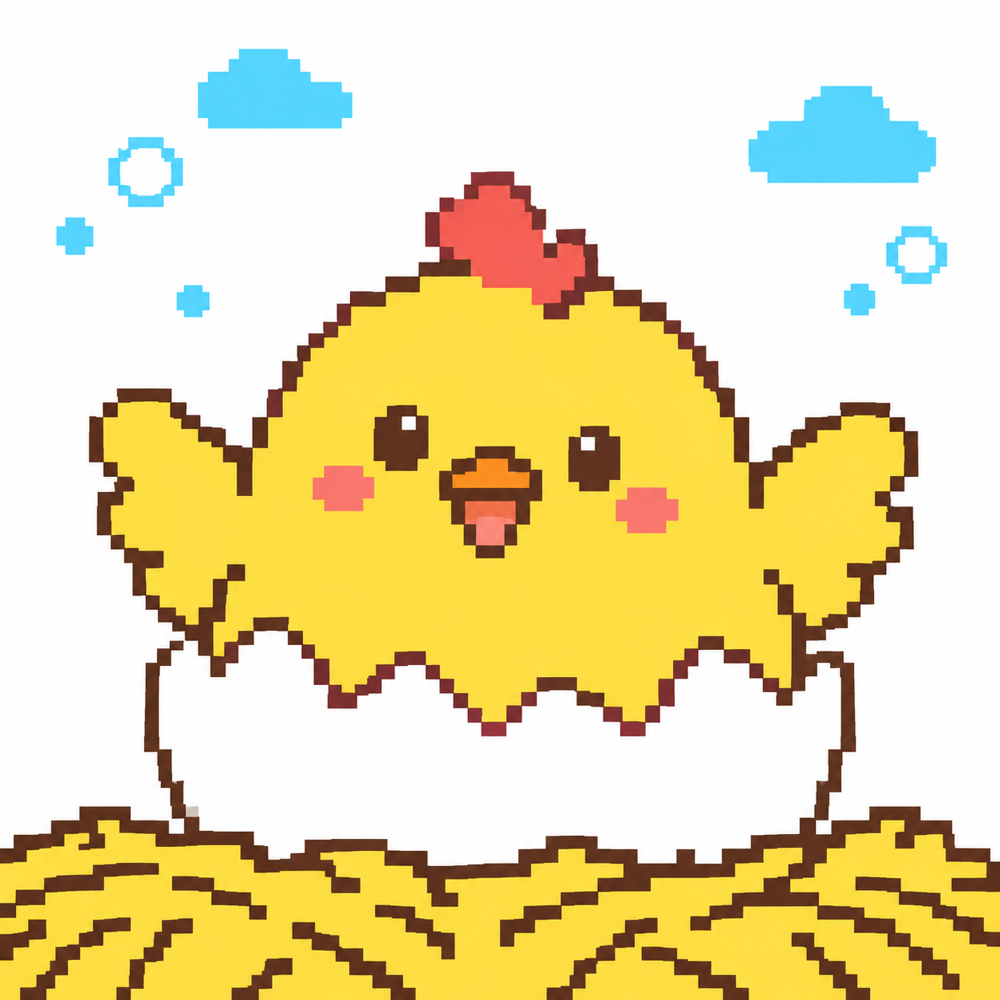
| 颜色 | 面积 | 目标 | 下部高度¹ |
|---|---|---|---|
| #FFFFFF | 53.6% | 40.6% | 15.7% |
| #FFDF48 | 31.1% | 37.2% | 0.3% |
| #65392D | 10.5% | 15.2% | 0.6% |
| #46D9FF | 2.9% | 5.5% | 69.1% |
| #FF525B | 1.9% | 1.4% | 7.8% |
第 04 张黑色主体已贴底，黑色约 31.0%（目标 34.5%），橙色约 6.2%（目标 6.7%）；前 3 张主体偏小。第 04 张仍需检查水花、白色球高光及底边裁切效果。
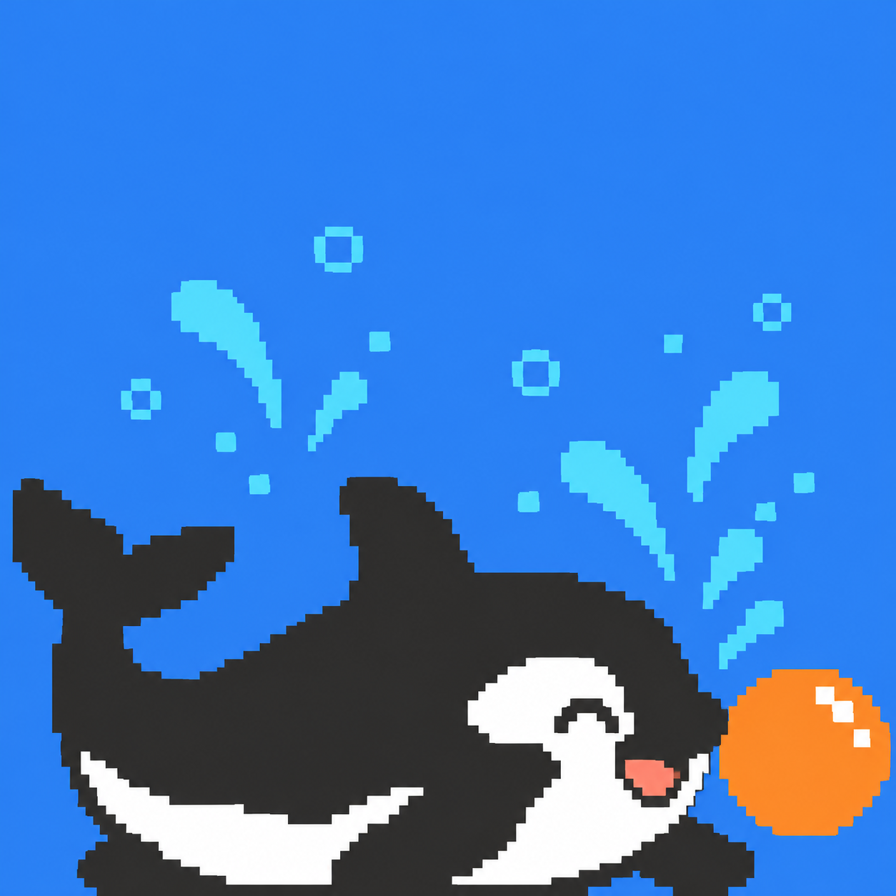
| 颜色 | 面积 | 目标 | 下部高度¹ |
|---|---|---|---|
| #2982F4 | 67.2% | 45.7% | 1.8% |
| #2D2D2D | 20.6% | 34.5% | 0.3% |
| #FF7E27 | 2.9% | 6.7% | 7.1% |
| #FFFFFF | 5.5% | 6.6% | 1.5% |
| #46D9FF | 3.9% | 6.5% | 26.7% |
| 颜色 | 面积 | 目标 | 下部高度¹ |
|---|---|---|---|
| #2982F4 | 63.9% | 45.7% | 4.5% |
| #2D2D2D | 22.1% | 34.5% | 0.2% |
| #FF7E27 | 2.9% | 6.7% | 2.2% |
| #FFFFFF | 5.4% | 6.6% | 1.2% |
| #46D9FF | 5.7% | 6.5% | 30.0% |
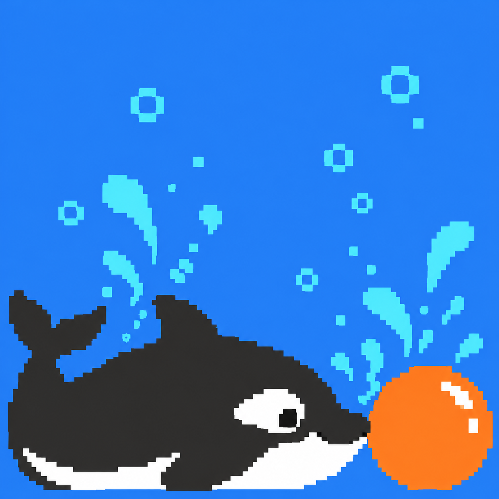
| 颜色 | 面积 | 目标 | 下部高度¹ |
|---|---|---|---|
| #2982F4 | 69.9% | 45.7% | 0.6% |
| #2D2D2D | 16.4% | 34.5% | 2.8% |
| #FF7E27 | 4.7% | 6.7% | 2.3% |
| #FFFFFF | 3.9% | 6.6% | 1.9% |
| #46D9FF | 5.1% | 6.5% | 20.6% |

| 颜色 | 面积 | 目标 | 下部高度¹ |
|---|---|---|---|
| #2982F4 | 51.1% | 45.7% | 2.1% |
| #2D2D2D | 31.0% | 34.5% | 0.3% |
| #FF7E27 | 6.2% | 6.7% | 4.6% |
| #FFFFFF | 7.2% | 6.6% | 2.1% |
| #46D9FF | 4.5% | 6.5% | 40.9% |
第 04 张主体更饱满，但靛蓝约 43.1%（目标 33.0%），浅蓝约 14.3%（目标 20.0%）；月亮下缘约在底边以上 58%–60%，低于 62% 的要求。其他候选背景也偏多。
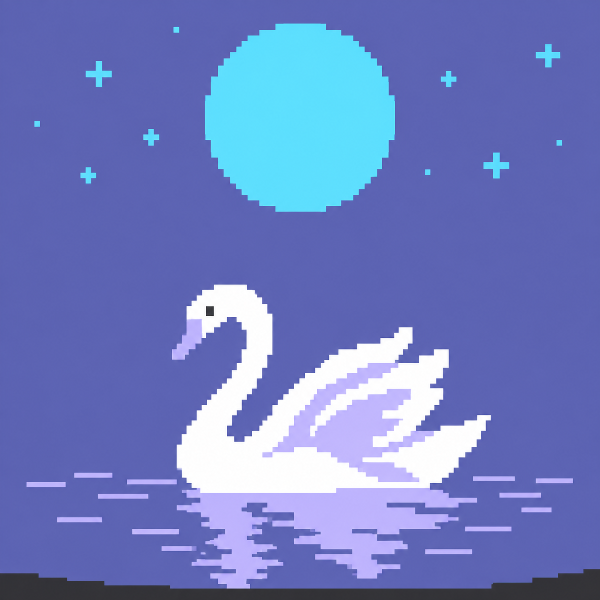
| 颜色 | 面积 | 目标 | 下部高度¹ |
|---|---|---|---|
| #696CAF | 74.6% | 33.0% | 3.2% |
| #FFFFFF | 7.4% | 23.4% | 18.2% |
| #46D9FF | 8.2% | 20.0% | 65.7% |
| #C8C5FF | 7.1% | 19.2% | 3.5% |
| #2D2D2D | 2.7% | 4.5% | 0.0% |
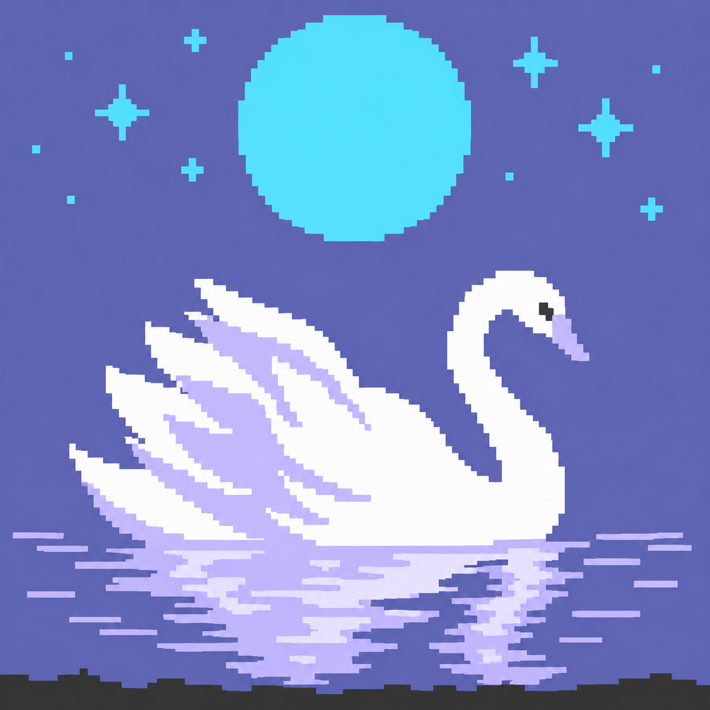
| 颜色 | 面积 | 目标 | 下部高度¹ |
|---|---|---|---|
| #696CAF | 61.0% | 33.0% | 4.2% |
| #FFFFFF | 14.0% | 23.4% | 11.5% |
| #46D9FF | 9.1% | 20.0% | 67.1% |
| #C8C5FF | 12.2% | 19.2% | 4.5% |
| #2D2D2D | 3.7% | 4.5% | 0.0% |
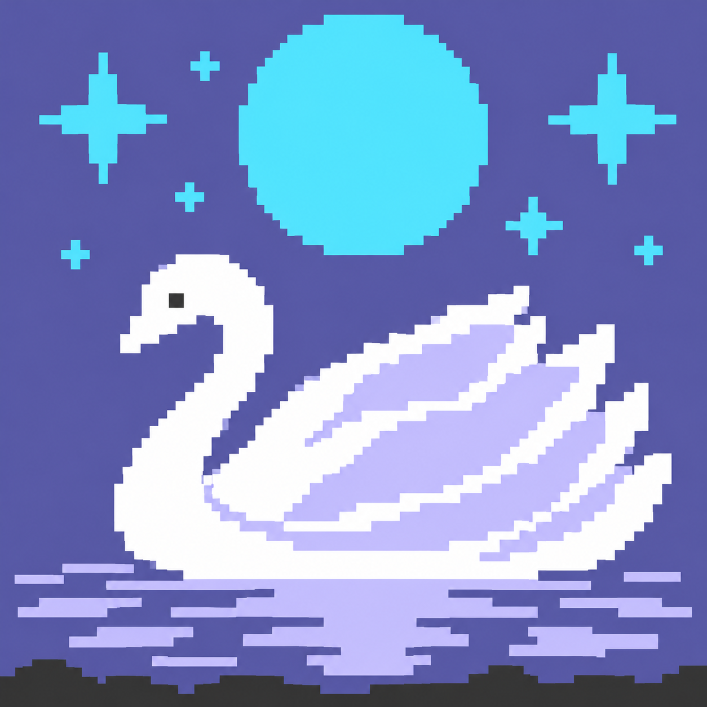
| 颜色 | 面积 | 目标 | 下部高度¹ |
|---|---|---|---|
| #696CAF | 53.3% | 33.0% | 4.1% |
| #FFFFFF | 15.5% | 23.4% | 18.4% |
| #46D9FF | 12.1% | 20.0% | 64.2% |
| #C8C5FF | 15.0% | 19.2% | 5.6% |
| #2D2D2D | 4.1% | 4.5% | 0.0% |

| 颜色 | 面积 | 目标 | 下部高度¹ |
|---|---|---|---|
| #696CAF | 43.1% | 33.0% | 4.8% |
| #FFFFFF | 18.3% | 23.4% | 5.4% |
| #46D9FF | 14.3% | 20.0% | 59.6% |
| #C8C5FF | 21.2% | 19.2% | 2.7% |
| #2D2D2D | 3.1% | 4.5% | 0.0% |